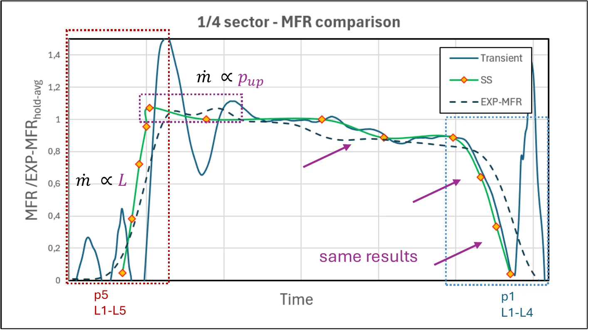
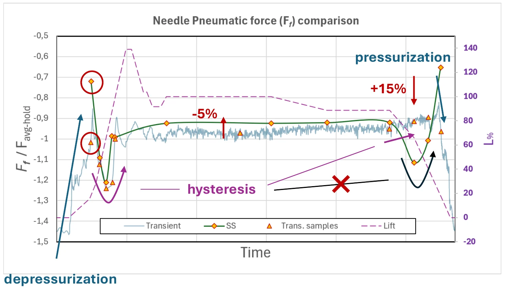
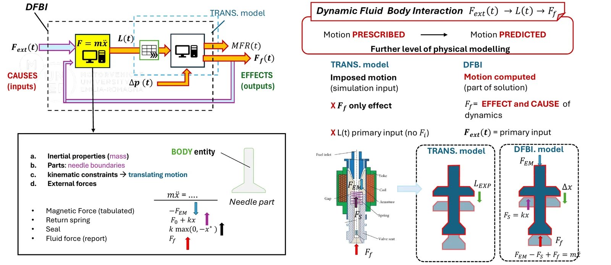
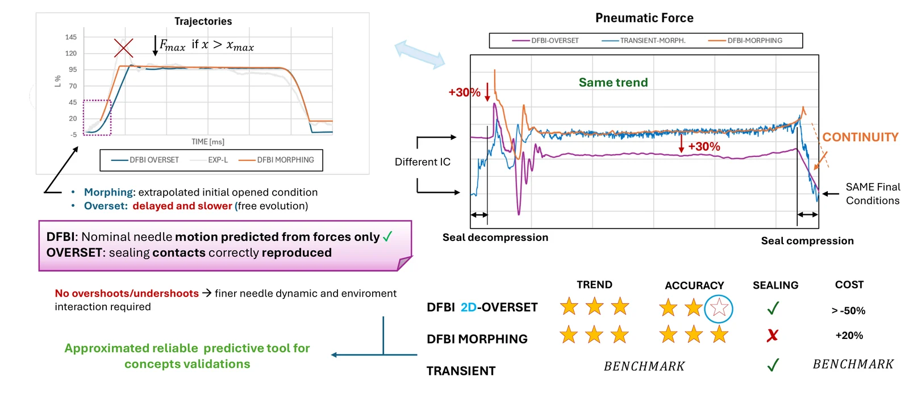

MSc Thesis Internship | CFD Analyst @ R&D CFD SRL, in collaboration with DUMAREY group · Modena · 11/2025 – 05/2026
CFD of a high-pressure hydrogen injector
Analysis of CFD methodologies applied to a high-pressure H2 injector in support of the design process. Supervisor: Stefano Fontanesi.
The problem
A high-pressure injector has moving parts and fast transients, so one steady simulation may not be enough. A design team needs to know which modelling level is sufficient and which one is worth its computing cost.
The work
I modelled the injector in STAR-CCM+ and compared approaches of growing complexity: steady and unsteady simulations, without and with mesh motion (morphing and overset techniques), and models that take into account the fluid-structure interaction and the external actions to compute the body motion (DFBI approach), using experimental data for correlation and model validation.




The result
The thesis analyses these CFD methodologies as a support to the injector design process, weighing what each one can predict against its cost. A steady-state model predicts mass flow rate as well as the transient one and is the right tool for fast design evaluation. A 2D DFBI model with overset mesh predicts the needle motion from forces alone and reproduces the sealing contacts at more than 50% lower cost than morphing, which makes it a reliable tool to validate concepts. The morphing technique remains the most reliable for final design analysis and validation.
The degree was awarded with 108/110.